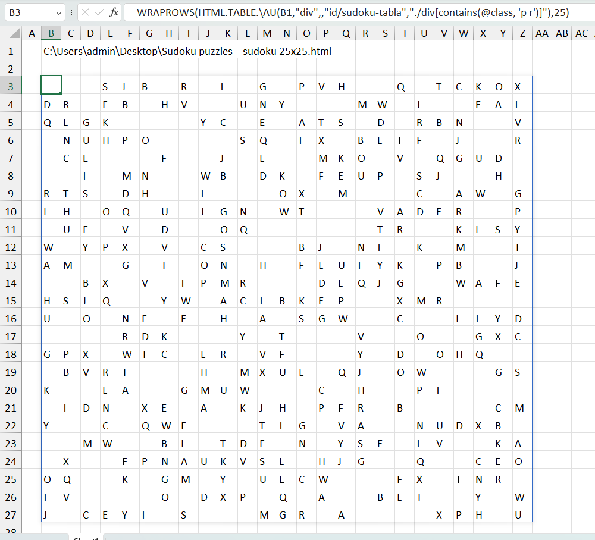

VD: Lấy thông tin một cửa hàng trên Shopee.

VD1: trích xuất thông tin sản phẩm từ Shopee.

VD2: trích xuất bảng dữ liệu ngoại tệ của một ngân hàng.

VD3: trích xuất dữ liệu từ bảng SUDOKU (lưu ý htmlcode không ở định dạng bảng).
=WRAPROWS(HTML.TABLE.\AU(B1,"div",,"id/sudoku-tabla","./div[contains(@class, 'p r')]"),25)
Related function
HTML.TEXT Trích xuất nội dung của một HTML node từ HTML guid hoặc HTML file.
Return to Home